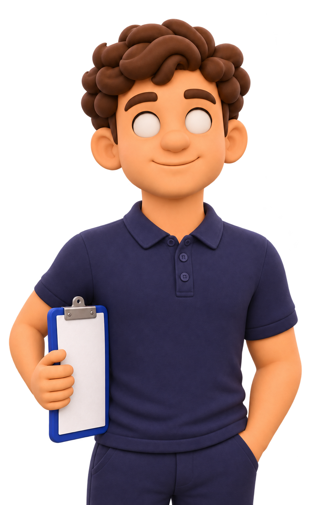

AI engineering student · INSA Rennes
Explore projects
Hover over the character to explore the organs.
Projects
Ouest INSA · ERP / CRMFlower
I contributed to Ouest INSA’s team-built ERP, working on study amendments, PDF document generation and interfaces for managing contributors.
Vue · Django · MySQL
View code on GitHubContact
I’m Mathys Dubois, a final-year computer engineering student specialising in artificial intelligence at INSA Rennes. I’m interested in applied research in healthcare, particularly machine learning for medical imaging and modelling disease progression.
I’m looking for a six-month research internship from 15 February 2027, anywhere in France.
mathys.dubois@insa-rennes.fr